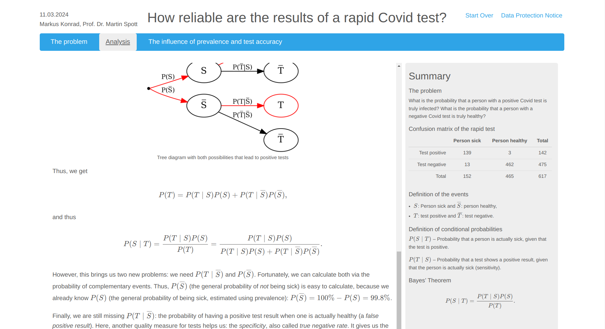

Creating learning applications¶
The MultiLA software platform authoring tool is based on an extension for the R package learnr. This extension is called learnrextra and is so far not available on CRAN, but can be installed via GitHub (see instructions below). Writing learning applications or tutorials works the same as with learnr, but learnrextra provides some additional features which will be explained below.
Note
It’s also possible to use learnrextra in standard Shiny applications and hence allow to enable the tracking features in those applications. See the “Usage in Shiny applications” section below.
Installation¶
Basic requirements: You should have R and RStudio installed.
Important
You should also have a recent version of pandoc installed on your system (e.g. via sudo apt install pandoc on Debian or Ubuntu based Linux systems).
(optional) Create a new RStudio project with renv for each new learning application.
Install the learnrextra package from GitHub, e.g. via
renv::install("https://github.com/IFAFMultiLA/learnrextra")or from a local folder if you’ve cloned the repository (renv::install("<LOCAL PATH TO REPOSITORY>")).(optional) Install the gradethis package from GitHub, e.g. via
renv::install("https://github.com/rstudio/gradethis")if you want to use code exercises and check them.Restart RStudio (unfortunately this is needed by RStudio in order to load the installed templates required for the next step).
You can now either create an RMarkdown-based application (a learnr app) or a Shiny-based application. For the former, do the following:
Create an RMarkdown document via File > New file > RMarkdown document … and select From template > Interactive tutorial (learnrextra).
Optionally update the language in the markdown frontmatter (header).
Check that generating (“knitting”) the document works by clicking “Run document”.
If you want to create a Shiny-based application, read on in the “Usage in Shiny applications” section.
Usage in RMarkdown-based applications (learnr apps)¶
You can now create your learning application in RMarkdown syntax. See the learnr documentation for how to do that. You will learn there how to add text, figures, interactive illustrations, equations, code exercises, quiz questions, videos and more to your learning application.
You can find a minimal RMarkdown-based learning application for illustrative purposes in the learnrextra_testapp repository.
Frontmatter options¶
Note
Frontmatter is the initial header block in Markdown documents denoted by beginning and trailing separator lines “---“.
For a learnrextra based learning application, the “output” option in the frontmatter of your RMarkdown should be set to learnrextra::tutorial (as it is set by default in the template):
# ...
output:
learnrextra::tutorial:
language: en
apiserver: http://localhost:8000/
# ...
There are two options for this output type:
Option
languageis an ISO-639 two-letter language code for the language used in the learning application and sets the language of the learning application interface.learnrsupports many languages butlearnrextraat the moment only supports English (en) and German (de). The elements of the interface that are provided bylearnrextrawill be in English by default, if you use any other language than German.Option
apiserveris the endpoint of the web API used to collect the tracking data; by default it’s set to send to port 8000 on localhost, e.g. on a local development machine. The following chapter will explain more about this.
Furthermore you should add the follwing line to the initial R setup code chunk (as it is also set by default in the template):
rmarkdown::find_pandoc(cache = FALSE)
This makes sure that when deploying your app on a server, the server’s installation of pandoc will be used for compiling your app instead of the outdated version that is provided internally by Shiny.
Dynamic summary syntax¶
An advanced feature of learnrextra is the dynamic summary panel: While working through the learning application, summarized content can be shown dynamically on a panel in the right side, depending on the learning progress. The summary pnael is shown in the following screenshot on the right side:
{kind=link}
To add dynamic summary content in your learning application, insert a “fenced div” block named summary at the position where the summary should be shown when the user has scrolled past it:
::: summary
#### Example headline
Initial content underneath this headline.
:::
It’s important to structure summary content with level-4 headlines (#### (headline)). If you place another summary block somewhere in your document with the same headline, new content will automatically be added underneath that headline:
::: summary
#### Example headline
Additional content underneath this headline.
:::
If you add {.replace} behind the headline, this will cause to completely replace the content underneath that headline:
::: summary
#### Example headline {.replace}
Replaced content underneath this headline.
:::
Data protection and tracking consent notes¶
You should embed the relevant text for the data protection and tracking consent notes in your learning application. To do so, place them within a tracking_consent_text and data_protection_text block, respectively. You can use any Markdown or HTML formatting.
::: tracking_consent_text
<place tracking consent notes here>
:::
::: data_protection_text
<place data protection notes here>
:::
Usage in Shiny applications¶
If you want to develop a learning application using Shiny instead of RMarkdown, you can also use the learnrextra package to enable user interaction tracking. You need to load the library in your app.R file, set the URL for the API server and optionally set the language:
library(learnrextra)
options("learnrextra.apiserver" = "http://localhost:8000")
options("learnrextra.language" = "en")
Then, simply use the use_learnrextra() library in your UI code to enable it. You can optionally pass paths to HTML snippets for the tracking consent and data protection notes via the consentmodal and dataprotectmodal parameters. These paths must be relative to your Shiny project path. See trackingconsent.html and dataprotect.html for how the HTML snippets should be structured. In order to show a field with the link to the data protection notes and optional login information, you should use the info_display() function in your UI code. An example for the UI code looks like this:
ui <- fluidPage(
# set up learnrextra; optionally point to HTML files with tracking consent and data protection notes
use_learnrextra(consentmodal = "www/trackingconsent.html", dataprotectmodal = "www/dataprotect.html"),
fluidRow(
column(
width = 12,
info_display() # show link for data protection and optional login information
)
),
# ... all other UI code
)
See also the learnrextra_testapp_shiny repository for a minimal Shiny application with learnrextra.
Deployment¶
The learning applications can be hosted on any R Shiny server. The next chapter on “Hosting learning applications and the web API” will give more information on deploying learning applications within the MultiLA software platform.